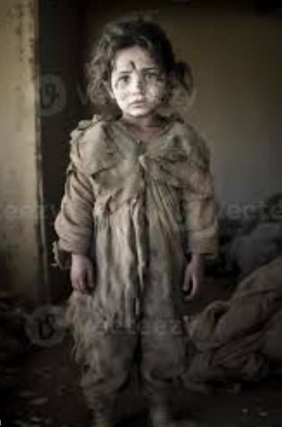
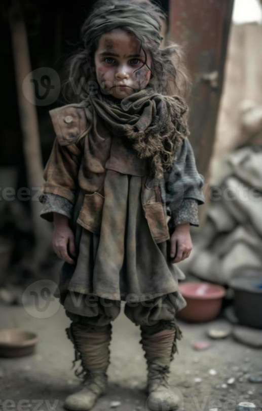

Amina
Amina is a palestinian girl who at the age of 10 and was living a beautiful life with her parents ,Ahmed and Leila, until the day came when the occupation spldier bombed the building in which they lived , which led to the death of her parents,her injury , and successful coup upside down.
See more
Ahlem
Ahlem is a palestinian girl who started at the age of 10 and was living a beautiful life with her parents ,ahmed and leila until the day came when the occupation spldier bombed the building in which they lived , which led to the death of her parents,her injury , and successful coup upside down.
See more
Ali Hamid
this is boy' s name is ali hamid , a 3-year-old child aisha,but because of the bombing in gaza on november the 20th he lost all of his family and found himself without shelter or breadwinners.Ali is now suffering from psychological disorders since the death of his family.he has not uttered a single word.
See more

Nour
Nour ,a 6 year old palestinian girl was subjected to an air strike that targeted her area and destroyed 3 residential buildings.
She was injured and undervient four operations while her family died.
See more

Salma
Salma is an 8-year-old Palestinian girl who became an orphan alone after her parents fell victim to a direct airstrike. Laila wanders the desolate streets with little left behind. It was only after what little solace was left as Layla faced the harsh reality and continued to survive in a world stripped of her clothes
See more

Ahmed
Ahmed is a young boy of 10 years old.he had modest ambitions,such as a full stomack ,a jacket over his head and the opportunity to dream beyond the separation with his parents but now the siege of relentess conflict has stripped away even these modest ambitions due to the war.
See more

Sami
Sami a 7 years old child .were found by alhilel injured without clothes in southern palestine.
Israeli soldiers stormed the hospital ,killing his family anf taking him to southern palestine after subecting him to torture.
See more

Amir
The echoes of bomb blasts and the acrid scent of smoke became the haunting backdrop to the existence of 5-year-old Palestinian child, Amir. The streets where he used to play became filled with danger, and the alleys resonated with painful memories of his parents' laughter, now forever silenced
See more

Laila
Laila is an 8-year-old Palestinian girl who became an orphan alone after her parents fell victim to a direct airstrike. Laila wanders the desolate streets with little left behind. It was only after what little solace was left as Layla faced the harsh reality and continued to survive in a world stripped of her clothes.
See more